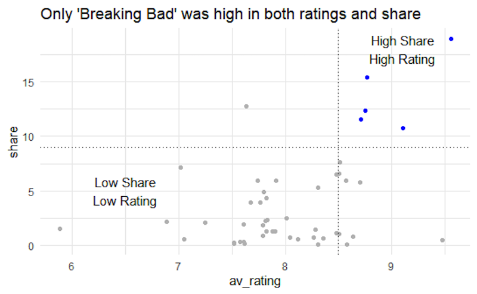

3 Annotating Your Plot
Data4All
3.1 Learning Objectives
- Learn about how annotations can help your viewer
- Modify titles using
labs() - Adding reference lines
- Annotating directly onto the graph
- Changing the scale
3.2 Guiding Your Viewer
Another way we can guide people through our visualization is by using annotations, which can be very helpful in guiding someone through our figure. Let’s review some best practices.
3.3 Use your titles/captions!
- Titles can guide people to the point of your figure
- Primes people to know what to look for
- “If there is a conclusion you want your audience to reach, state it in words” - Cole Nussbaum Knaflic
3.4 Don’t label everything

- Think about only labeling the data that matters
- If you want someone to compare two shows, label them
- Think about groupings and “super categories” to help your viewers make sense of the graph]
3.6 Before you move on, discuss:
What TV Show do you want to highlight with text? Why is it interesting to you? Is there a trend you want to highlight?
3.7 Changing Titles
There is a function called labs() that will let you change the titles for a graph. Figure out where these titles are added to the graph below.
Why is labs() not part of theme()? This is one confusing thing about ggplot2. theme() is about the appearance (position, angle, font size) of an element, whereas the labs() function actually provides the content.
We can use the .set_title() and set_xlabel()/set_ylabel() to change our titles and labels.
3.8 Adding a Reference Line
Adding reference lines are a great way to focus people on different aspects of a graph:
Using geom_hline() to show the average value across a time period can provide a useful reference for viewers:
We can add a horizontal reference line using plt.axhline():
We can add a vertical reference line instead using geom_vline() (note the argument, xintercept is different than geom_hline()):
In Python, we can add a vertical reference line using plt.axvline():
3.9 Adding text annotations
Adding text annotations directly to the graph can be extremely helpful, especially if there are points of interest you want users to look at.
(For adding text information per data point, look at geom_text() and geom_repel() from the ggrepel package). The first argument to annotate() is “text”.
It takes x and y arguments to determine the position of our annotation. These values are dependent on the scale - since we have a numeric scale for both the x and y axes, we’ll use numbers to specify the position.
Our actual text goes in the label argument.
Run the code block below. Try adjusting the y argument for annotate() to get the annotation more centered around the mean reference line.
We can use plt.text() to add a text annotation to our plot.
3.10 One last thing: changing the numbers in the ticks
One last thing that’s been bugging me - the values of the ticks in the Season Number axis.
We can specify these numbers using the breaks argument. Note that c(1:10) is a shortcut for specifying c(1, 2, 3, 4, 5, 6, 7, 8, 9, 10).
For Python, we can pass in a list that has the ticks we want to annotate with the range() function:
3.11 Your Turn
Experiment with the following modifications to the graph. If you have time, cut and paste the modifications you decided on in part 2 to your graph.
If there’s a show that you want to highlight, try adding an annotation to highlight it. Or try adding an annotation at Roseanne’s lowest rating!
3.12 For more information
For more examples of how annotating can make figures more clear, please check out Storytelling with Data, especially the linegraphs with annotations for examples.
Making annotations first class citizens in data visualization: https://medium.com/@Elijah_Meeks/making-annotations-first-class-citizens-in-data-visualization-21db6383d3fe
3.5 Social Media Preference Example
https://datawoj.co.uk/visualising-data-on-which-social-media-network-us-teenagers-prefer/